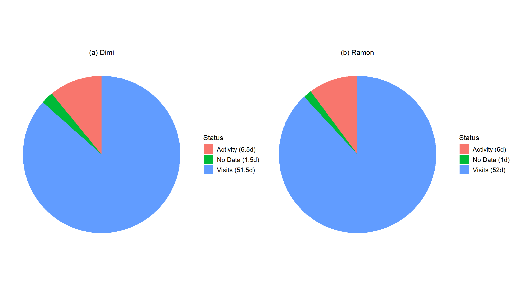
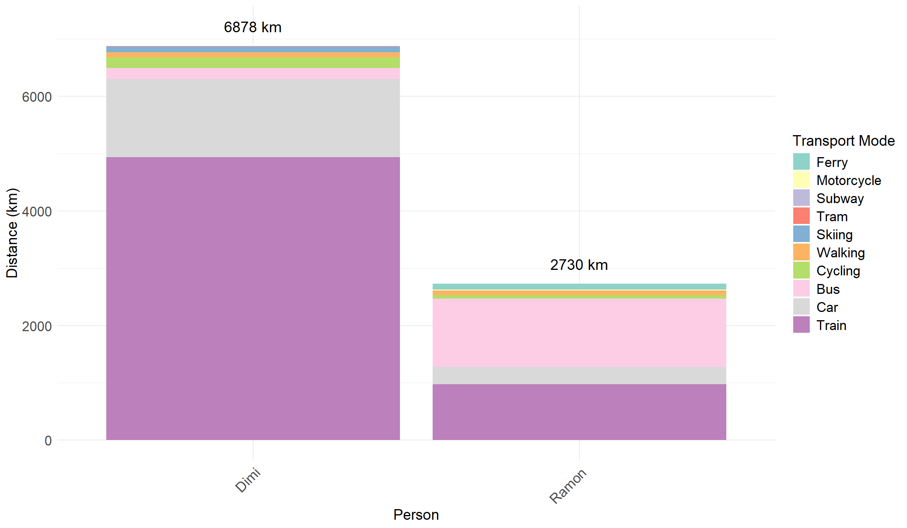
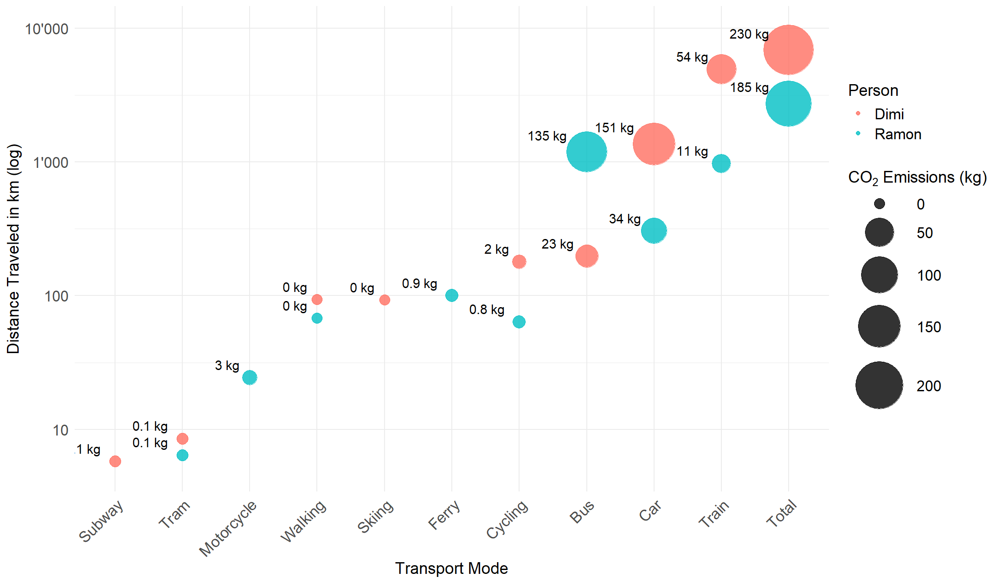
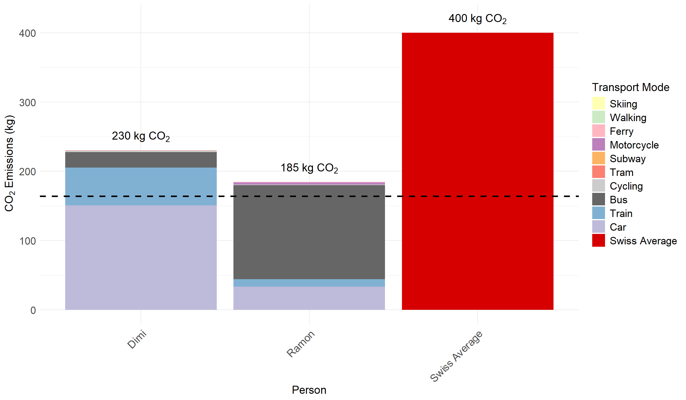

library(jsonlite) # For parsing and generating JSON data.
library(dplyr) # For data manipulation using a grammar of data transformation.
library(tidyr) # For tidying and reshaping data into a consistent format.
library(sf) # For handling and analyzing spatial (vector) data using simple features.
library(ggplot2) # For creating static graphics and visualizations using the grammar of graphics.
library(tmap) # For creating thematic maps, both static and interactive.
library(tidyverse) # A collection of R packages for data science, including ggplot2, dplyr, tidyr, etc.
library(leaflet) # For creating interactive web maps using the Leaflet JavaScript library.
library(purrr) # For functional programming, especially working with lists and iterating functions.
library(webshot2) # For taking screenshots of web pages or HTML widgets.
library(htmlwidgets) # For embedding JavaScript widgets (e.g., interactive plots/maps) in R Markdown or Shiny apps.
library(ggrepel) # For improving the readability of ggplot2 text labels by avoiding overlap.
library(patchwork) # For combining multiple ggplot2 plots into a single layout.
library(knitr) # For dynamic report generation with R Markdown and LaTeX/HTML/Word output.
library(kableExtra) # For enhancing tables created with knitr::kable, especially in HTML/PDF reports.
library(gt) # For creating elegant, customizable tables for reporting.
library(RColorBrewer) # For generating color palettes for plots, especially categorical or sequential color scales.Tracking Personal Mobility: A Spatio-Environmental Analysis of Student Travel Behavior and Emissions Using Google Timeline and SimaPro Data
Abstract
This project work investigates the mobility behaviour and greenhouse gas (GHG) emissions of two students, Ramon and Dimitri, over a two-month period using Google Timeline data and life cycle assessment (LCA) tools (SimaPro and Ecoinvent). The analysis divides movement into rest and activity phases, identifies places visited and assesses transport mode use. Dimitri travelled a total of 6,878 km and emitted 230 kg of CO₂e, while Ramon travelled 2,730 km and emitted 185 kg of CO₂e. Despite travelling more than twice the distance, Dimitri’s emissions were only moderately higher due to his greater reliance on trains. When compared to the average Swiss transport emissions (400 kg CO₂e over two months), both individuals performed better, but neither remained within the 1.5°C compatible threshold of 164 kg CO₂e. The study concludes that while current personal travel can already achieve below-average emissions, further changes - such as increased use of public transport, switching to electric vehicles charged with a mix of renewable electricity, car sharing, but also home offices and remote working - are essential to meet climate targets.
1 Introduction
In recent years, the tracking and analysis of human mobility have gained increasing importance—both for understanding movement behavior and for assessing its environmental impact. The growing availability of spatial and temporal data from digital devices presents new opportunities to link individual travel patterns with greenhouse gas (GHG) emissions, thereby contributing to broader climate change research.
Transport plays a key role in global GHG emissions and is one of the fastest-growing sources of climate-relevant emissions. In 2019, the transport sector emitted approximately 8.7 to 8.9 gigatonnes (Gt) of CO₂e, a significant increase from 5.0 to 5.1 Gt CO₂e in 1990. This growth positions the transport sector as the fourth-largest contributor to global GHG emissions, following the power, industry, and agriculture, forestry and land use (AFOLU) sectors. Transport accounts for around 15% of total global GHG emissions and approximately 23% of energy-related CO₂ emissions. Since 2010, emissions from the sector have grown at an average annual rate of 1.8%, making it the fastest-growing end-use sector (Jaramillo et al. 2022).
The structure of global transport emissions reveals a sector heavily reliant on fossil fuels, especially for road-based mobility. As of 2019, road transport was by far the largest contributor, responsible for approximately 6.1 Gt CO₂e, or about 69–70% of total transport emissions. This includes both passenger vehicles and freight transport, such as trucks and vans. The dominance of road transport underscores its central role in global mobility systems and its dependence on internal combustion engine vehicles (Jaramillo et al. 2022).
International shipping is the second-largest source of transport emissions, contributing around 0.8 GtCO₂-eq (9–11% of the sector’s total). It is vital for global trade, with long-distance shipping routes forming the backbone of international logistics. Close behind is international aviation, which accounted for approximately 0.6 GtCO₂-eq, or 7–12% of transport emissions. The rise in air travel—particularly long-haul international flights—has made aviation one of the fastest-growing sources of emissions. Between 2010 and 2019, emissions from international aviation increased at an average annual rate of 3.4%, driven by expanding global mobility, tourism, and business travel (Jaramillo et al. 2022).
In contrast, rail transport contributes only about 1% of direct emissions. Rail is typically more energy-efficient and lower in emissions, especially where electrified networks are in use. However, its limited share of global passenger and freight activity means its overall emissions impact remains relatively small. The remaining emissions—around 1.4 Gt CO₂e or 16% of the sector total—come from various sources including domestic aviation, buses, and other forms of collective or niche transport. While each of these modes contributes less individually, they still offer significant potential for emissions reduction through cleaner fuels, increased efficiency, and modal shifts (Jaramillo et al. 2022).
Moreover, detailed emission inventories help translate mobility behavior into CO₂ equivalents. In Switzerland, for example, approximately 13 tonnes of CO₂-equivalent are emitted per capita annually, including both domestic and abroad emissions (Bundesamt für Umwelt (BAFU) 2025b). Of this total, only around 4 tonnes occur within Switzerland, while the remaining emissions are generated abroad, primarily due to the import of goods and services. About one-third of these emissions stem from mobility, excluding international flights (Bundesamt für Umwelt (BAFU) 2025c). This distinction is important when assessing responsibility and reduction potential, as a significant portion of the environmental impact is embedded in global supply chains and consumption patterns (Bundesamt für Umwelt (BAFU) 2025a). Given Switzerland’s population of approximately 8.8 million (as of 2023), this amounts to an estimated 114 million tonnes of CO₂e emissions per year.
Nathani et al. (2022) estimate that mobility behavior in Switzerland leads to at least 2.4 tonnes of CO₂e per capita, with over 1.5 tonnes resulting from domestic direct emissions—such as burning fuel in vehicle engines. As such, transport is the sector responsible for the largest share of GHG emissions. The United States presents a similar picture, where transport also ranks as the top emitting sector (Administration 2019).
Without significant intervention, transport-related emissions are projected to increase by 16–50% by 2050. However, in scenarios aligned with the 1.5°C climate target, a 59% reduction in transport CO₂e emissions by 2050 (compared to 2020 levels) is required. More ambitious pathways, such as the “1.5°C Low Demand” scenario, envision reductions of up to 90% (Jaramillo et al. 2022).
This study is grounded in Computational Movement Analysis (CMA), which provides the theoretical and methodological framework. As Laube (2014) explains, CMA integrates geographic information science, computer science, and statistics to analyze movement through space and time. Geographic information science offers spatial modeling and spatio-temporal operations; computer science supports data handling, querying, and analysis and statistics contribute methods for describing and modeling movement patterns.
1.1 Research Objective
This research investigates the mobility patterns of two students, focusing on differences in their travel behavior in terms of movement, rest periods, visited locations, and transportation choices. Using Google Timeline data, the study aims to quantify the environmental footprint of their mobility and compare it to national benchmarks. The analysis not only provides insights into individual movement dynamics but also demonstrates how CMA and life cycle assessment tools — such as SimaPro and Ecoinvent — can be integrated to estimate the GHG impact of personal mobility.
The Google Location data of Ramon and Dimitri, exported in JSON format, serves as the foundation for the analysis. This dataset includes GPS coordinates, timestamps, and inferred travel modes. The data will be processed and visualized on maps to illustrate spatial and temporal mobility patterns. Through segmentation and classification of the trajectory data, daily travel routines will be reconstructed, allowing for a detailed comparison of the students’ mobility profiles.
By applying CMA techniques, the study will identify and quantify key patterns such as frequency of travel, mode choices, and spatial dispersion. These findings will be translated into environmental impacts using life cycle assessment models in SimaPro, combined with transport-specific datasets from Ecoinvent. Ultimately, the methodology is expected to provide a replicable workflow for linking personal mobility data with environmental indicators, and to contribute to the broader discussion on travel behavior.
1.2 Research Questions
The study is guided by the following research questions:
How do the movement patterns of the two students differ?
What is the ratio between rest and movement? (Segmentation)
Which are visited locations (duration at least 1 hour)?
How does the use of transportation modes differ between the samples over a specific period?
What impact do the movement patterns have on each student’s CO₂e footprint?
How do the extrapolated emissions of the students perform in comparison of the Swiss average?
2 Methodology & Data
This chapter outlines the methodological framework and data sources used to analyze individual mobility patterns and their associated GHG emissions. The analysis combines high-resolution spatio-temporal data from Google Timeline with environmental impact modeling using life cycle assessment (LCA) tools. CMA principles serve as the theoretical foundation for structuring and interpreting mobility trajectories. Data preprocessing and spatial analysis were conducted in R, using a suite of packages for JSON parsing, spatial visualization, and statistical modeling. Together, these approaches enable a comprehensive assessment of movement behavior and its environmental implications at both local and international scales.
2.1 R, Quarto and R Packages
For this analysis, R (R Core Team 2024) was used for data cleaning, spatial analysis, visualization, and statistical modeling. The code was developed and executed using RStudio (RStudio Team 2024), an integrated development environment that facilitates reproducible research. The report itself was written using Quarto (Posit PBC 2024), an open-source scientific and technical publishing system that supports dynamic documents and integrates seamlessly with R and RStudio.
2.2 Google Timeline
Google Timeline data (Google LLC 2025) was used as the primary source for capturing individual mobility patterns. This data is collected via Google Location History and is available to users who have enabled location tracking on their mobile devices. It offers high-resolution spatio-temporal data (see Table 1).
| Data.Element | Description |
|---|---|
| Timestamp (start and end) | Time a location was entered and exited |
| Latitude and longitude | Precise GPS coordinates of locations and routes |
| Place name and address | Named location or address from Google’s POI database |
| Activity type (e.g., visit, travel) | Distinguishes between staying at a place or being in transit |
| Transportation mode | Inferred travel mode such as walking, driving, cycling, bus, etc. |
| Travel distance | Distance travelled per segment (estimated by Google) |
| Dwell time | Duration spent at a specific location |
| Confidence level (Google’s certainty rating) | Google’s internal confidence in its mode or place inference |
| Device information (optional) | Device type or app used to record location, if available |
| Semantic place type (e.g., ‘restaurant’, ‘university’) | High-level category assigned to places visited |
2.3 Computational Movement Analysis
The analysis of spatio-temporal mobility data in this study is grounded in core principles from computational movement analysis. The preprocessing and segmentation of individual movement trajectories was based on the framework described by Laube (2014), particularly the methods outlined in Chapter 3.2.1: Segmentation and Filtering. Raw data from Google Location Services were organized into structured trajectories by leveraging the temporal and categorical information provided in the JSON files, including timestamps, transport mode labels, and location types.
The movement records were treated as event-based sequences, segmented into daily trip chains using changes in transportation mode and temporal gaps between recorded segments (Laube 2014). This segmentation process followed the conceptual structure proposed by Dodge, Weibel, and Lautenschütz (2008), who introduced a taxonomy of movement patterns that supports interpretation of temporal regularity and spatial extent—useful for distinguishing between local and long-distance activities.
2.4 Life Cycle Data
This chapter outlines the LCA framework and data sources used to quantify the environmental impact of the mobility behavior analyzed in this study. To calculate transportation-related GHG emissions, a combination of modeling tools and standardized databases was applied.
2.4.1 SimaPro
SimaPro 10.1 (PRé Sustainability 2025) was used as the primary LCA software for modeling and calculating GHG emissions associated with transportation activities. It offers a robust platform for quantifying environmental impacts across full life cycles, including direct and indirect emissions related to fuel production, vehicle operation, and infrastructure. The software enables transparent modeling, flexible scenario comparisons, and integration of context-specific activity data, making it well-suited for mobility-related carbon footprint analyses.
2.4.2 Ecoinvent
The Ecoinvent v3.11 database (Ecoinvent Association 2024) was used as the life cycle inventory (LCI) source within SimaPro. Ecoinvent provides high-quality, peer-reviewed datasets for a wide range of economic activities, including detailed data on transport processes. For this study, specific datasets were selected to model emissions from various transportation modes—such as passenger cars (internal combustion engine and electric), buses, regional trains, trams, bicycles, and freight ferries. These datasets correspond to full process names from the Ecoinvent database, ensuring transparency and reproducibility in the modeling approach (see Table 2). The selection was based on the transport types and distances identified through Google Timeline tracking.
The LCI data include upstream and downstream processes, enabling a comprehensive cradle-to-grave emissions analysis. This approach allows for a detailed estimation of GHG emissions associated with each mode of transportation used during the analyzed period.
| Transport.Mode | Ecoinvent.Process.Name |
|---|---|
| Train | Transport, passenger train {CH}| transport, passenger train, regional | Cut-off, U |
| Car (Internal Combustion Engine) | Transport, passenger car with internal combustion engine {RER}| transport, passenger car with internal combustion engine | Cut-off, U |
| Car (Electric) | Transport, passenger car, electric, with Swiss electricity mix {GLO}| transport, passenger car, electric | Cut-off, U |
| Motorcycle | Transport, passenger, motor scooter {CH}| transport, passenger, motor scooter | Cut-off, U |
| Bicycle | Transport, passenger, bicycle {CH}| transport, passenger, bicycle | Cut-off, U |
| Bus | Transport, regular bus {CH}| transport, regular bus | Cut-off, U |
| Tram | Transport, tram {CH}| transport, tram | Cut-off, U |
| Ferry | Transport, freight, sea, ferry {GLO}| transport, freight, sea, ferry | Cut-off, U |
2.4.3 IPCC GWP 100a Impact Assessment Method
To translate life cycle inventory results into climate-relevant metrics, the IPCC 2021 GWP 100a impact assessment method was applied (Intergovernmental Panel on Climate Change (IPCC) 2021). This method expresses the global warming potential (GWP) of greenhouse gases in terms of carbon dioxide equivalents (CO₂e) over a 100-year time horizon. It reflects the most recent scientific consensus provided by the Intergovernmental Panel on Climate Change (IPCC) and enables standardized comparison of different emission sources and activities. By applying this method within SimaPro, all modeled greenhouse gas emissions were converted into consistent and comparable CO₂e values, ensuring the results align with international reporting standards and climate targets.
3 Results
This section presents key findings from our two-month mobility analysis. We first examine the distribution between rest and movement, followed by an overview of the most visited locations. We then analyse individual transport activities, including travel distances and CO₂ emissions by mode, and conclude with a comparison to the Swiss average.
3.1 Distribution between rest and movement
As illustrated in Figure 1, the majority of the Google Timeline data is classified as visits (e.g. staying at home, working), while activities (such as walking, cycling or driving) account for a much smaller share. When aggregating the total recorded time, Dimitri’s activities correspond to 6.5 full days, and Ramon’s to 6 days. The remaining recorded time – 51.5 and 52 days respectively – was spent at stationary locations. This highlights that although movement occurred regularly, it made up only a small fraction of the total recorded time.

3.2 Visits
As shown in Figure 2, Dimitri visited several locations within Switzerland and also spent time in Spain. Notably, visits to Madrid and Barcelona were recorded, both of which were related to work. The spatial distribution is therefore more dispersed, reflecting international travel activity in addition to domestic mobility. The geographic data were visualized using OpenStreetMap (OpenStreetMap 2025).
Figure 3 shows that Ramon’s mobility was exclusively within Switzerland. The data reveals a dense pattern of visits in central Switzerland and parts of western Switzerland, indicating a regionally focused mobility behaviour. Most of the longer trips were related to ice hockey games that Ramon played during the observed period.
3.3 Activities
Figure 4 displays the total distances in kilometers travelled by Dimitri and Ramon, broken down by transport mode. Each bar represents the overall distance per person and is subdivided by transport modes.
Dimitri travelled a total of 6,878 kilometers, more than double Ramon’s total of 2,730 kilometers.
For Dimitri, the dominant transport mode is Train, accounting for approximately 4,938 km, followed by Car with 1,361 km, and Bus with 197 km. Other modes such as Cycling, Walking, Tram, Subway, Skiing, and Ferry contribute smaller portions to the total. A significant portion of Dimitri’s train distance — roughly 3,100 km — is due to a single long-distance trip to Spain. Remarkably, this single journey alone exceeds Ramon’s entire travel distance over the two-month period.
Ramon’s top transport mode is Bus, with 1,188 km, followed by Train (975 km) and Car (305 km). Notably, Motorcycling appears in Ramon’s data (24 km) but is absent for Dimitri. In contrast, Ramon has no recorded distance for Skiing or Subway, both of which are present in Dimitri’s profile.
It is important to note that the bus category includes both public bus rides and long-distance coach trips, as Google Timeline does not differentiate between these two types of travel.
This visualization highlights not only the difference in total mobility between the two individuals but also their distinct preferences in transport modes.

As shown in Table 3, different transport modes vary significantly in their CO₂ equivalent emissions per passenger kilometer. Surprisingly, cycling does not have a CO₂e value of zero. This is because the value accounts for life-cycle emissions, including those from the production and maintenance of the bicycle. Since these emissions are allocated per passenger kilometer, cycling ends up having a slightly higher emission factor than train travel. For skiing, no specific CO₂ equivalent emission factor could be identified, so we assumed it to be zero.
For the ferry trip, we considered that only Ramon used this mode of transport. Although it was a freight ferry, we estimated the emissions based on Ramon’s body weight to approximate a fair share of per-person emissions in the absence of more granular data.
In the case of car travel, we assumed an average occupancy of 1.5 persons per vehicle, consistent with standard assumptions in emission modelling. Furthermore, we estimated that 75% of the distance travelled by car was covered using an electric vehicle (EV), while the remaining 25% was driven with a conventional internal combustion engine (ICE) vehicle. Accordingly, the total car emissions were calculated as a weighted average: 75% from EV emission factors and 25% from conventional vehicle factors.
| Transportmode | CO₂eq in kg per passenger kilometer |
|---|---|
| Car | 0.111 |
| Walking | 0.000 |
| Bus | 0.114 |
| Train | 0.011 |
| Tram | 0.016 |
| Cycling | 0.012 |
| Ferry | 0.009 |
| Subway | 0.016 |
| Motorcycle | 0.121 |
| Skiing | 0.000 |
Figure 5 provides a comprehensive overview of both mobility behavior and resulting CO₂e emissions for Dimitri and Ramon across various transport modes. The y-axis represents the total distance travelled (log scale), while the size of each bubble corresponds to the total CO₂e emissions (in kilograms) for that mode.
This visualisation highlights the differences in transport choices and their environmental impacts. While Dimitri travelled further overall – covering around 5,000 km by train and 1,300 km by car – his car-related emissions were still three times higher than those from train travel. This is particularly noteworthy given that approximately 75% of his car travel was done using an electric vehicle. The result underlines the high efficiency of rail transport, even when compared to low-emission vehicle alternatives such as electric cars.
Ramon, on the other hand, showed a more regionally focused travel pattern but still generated substantial emissions from bus usage. The contrast between high distances and small bubbles for train travel, versus relatively large bubbles for car and bus use, clearly illustrates the importance of low-emission transport options in reducing one’s carbon footprint.

As shown in Table 4, Dimi travelled 1,361 km by car, causing 151 kg CO₂e, followed by 4,938 km by train resulting in 54 kg CO₂e, and 197 km by bus leading to 23 kg CO₂e. These three modes account for over 97% of his emissions. The relatively high value for train travel is largely explained by a long-distance journey to Spain (~3,100 km).
| Transport Mode | Distance (km) | CO₂e Emissions (kg) |
|---|---|---|
| Car | 1361 | 151 |
| Train | 4938 | 54 |
| Bus | 197 | 23 |
For Ramon, the largest contributors were bus, car, and train. As shown in Table 5, he travelled 1,188 km by bus, which caused 135 kg CO₂e, followed by 305 km by car (34 kg CO₂e) and 975 km by train (11 kg CO₂e).
This shows that Ramon’s emissions are strongly shaped by his reliance on buses, while train and car played a secondary role. As already mentioned, this includes both public bus rides and coach trips, with the latter mainly related to travel for hockey games.
| Transport Mode | Distance (km) | CO₂e Emissions (kg) |
|---|---|---|
| Bus | 1188 | 135 |
| Car | 305 | 34 |
| Train | 975 | 11 |
Figure 6 illustrates the transport-related CO₂e emissions (in kg) of Dimitri and Ramon over a two-month observation period. Each bar is subdivided by transport mode. A third bar represents the Swiss per capita average, also scaled to two months for comparability. Over this period, Dimitri travelled a total of 6,878 km, resulting in 230 kg CO₂e emissions, while Ramon travelled 2,730 km, causing 185 kg CO₂e emissions. Although Dimitri covered more than twice the distance, his emissions were only moderately higher – reflecting differences in transport mode choices. For Dimitri, the top three CO₂e sources were car, train, and bus travel.
The bar labelled Swiss Average corresponds to a reported annual mobility footprint of 2.4 tonnes CO₂e per person in Switzerland (Nathani et al. 2022), scaled down to 400 kg CO₂e for a two-month period.
The dashed black line marks the 1.5°C-compatible emissions threshold, calculated at 164 kg CO₂e per person over two months. This value is derived by first converting the estimated Swiss annual mobility footprint of 2.4 tonnes CO₂e per capita (Nathani et al. 2022) into a two-month equivalent (400 kg CO₂e), and then applying the 59% reduction required in 1.5°C-aligned scenarios, as reported by the IPCC (Jaramillo et al. 2022). The resulting value reflects the emissions ceiling for transport per person during a two-month period, if Switzerland were to follow a trajectory consistent with limiting global warming to 1.5°C.
As shown in the graphic, both individuals slightly exceed this threshold – Dimitri with 230 kg CO₂e and Ramon with 185 kg CO₂e – but remain significantly below the current national average of 400 kg CO₂e. A more detailed assessment of this benchmark and its implications will be addressed in the discussion section.

4 Discussion
This project work provides a comprehensive analysis of the mobility patterns and CO₂ emissions of two individuals, Dimitri and Ramon, over a two-month period. Using Google Timeline data, we were able to track their movements and categorise them by mode, allowing a detailed examination of their travel behaviour and associated environmental impacts.The results show significant differences in the mobility patterns and CO₂ emissions of the two individuals. Dimitri’s total distance travelled was more than double that of Ramon, with a notable reliance on train travel. But yet he emitted only about 25% more greenhouse gases than Ramon. This highlights the potential for rail to significantly reduce emissions compared to other modes, even when electric vehicles are taken into account. Ramon’s mobility, on the other hand, was more regionally focused, with a higher reliance on bus travel and coach trips.
The analysis also showed that both individuals exceeded the 1.5°C compatible emissions threshold for transport, indicating that their travel behaviour is not in line with climate goals. This finding highlights the need for more sustainable mobility options and policies to encourage lower emission travel choices.
4.1 Improvements in Transport behavior
Reducing greenhouse gas (GHG) emissions from everyday mobility requires a shift from the use of private, single-occupancy vehicles to more efficient and collective transport solutions. Two particularly effective strategies are promoting the use of public transport and increasing vehicle occupancy through carsharing. These approaches are highlighted in the IPCC’s Sixth Assessment Report as key levers for decarbonising transport, offering immediate mitigation potential with relatively low structural barriers (Jaramillo et al. 2022). In in this study results, Dimitri’s car-related emissions were significantly higher than Ramon’s - 151 kg versus 33 kg CO₂e. These emissions were calculated assuming an average car occupancy of 1.5 people, reflecting typical use in small group contexts.
In order to assess the potential benefits of shared mobility, a sensitivity analysis shows the improvement assuming a car occupancy of three people. In this scenario, the emissions from car trips would be spread over more passengers, effectively halving the individual footprint from car use. As a result, Dimitri’s emissions would fall to around 75.5 kg CO₂e and Ramon’s to around 16.5 kg CO₂e. Which could lead to total emission of 154 kg CO₂e for Dimitri and 168 kg CO₂e for Ramon respectively. This simple adjustment illustrates how even modest changes in travel behaviour - such as organising carsharing for regular journeys - can have a significant impact on a person’s carbon footprint.
Beyond carsharing, investment in public transport infrastructure and service quality is crucial. Reliable, well-connected systems can provide a viable alternative to the private car, especially for daily commuting. Increasing the attractiveness of public transport through improved frequency, affordability and coverage can encourage modal shift on a large scale.
Remote and hybrid working models have also emerged as effective strategies for reducing commuter-related emissions.A study of Zheng et al. (2024) found that a 10% reduction in the number of on-site workers compared to pre-pandemic levels could result in an annual reduction of approximately 191.8 million tonnes (10%) of CO₂ emissions from the transportation sector in the United States. In addition, research shows that switching from working on-site to working remotely five days a week can result in a 54% reduction in a worker’s employment-related carbon footprint (Kahn 2022).
However, it’s important to note that increased remote working can have an impact on public transport systems. Zheng et al. (2024) highlighted that a 10% increase in remote workers could lead to a 27% decrease in transit fare revenue nationally, potentially affecting the sustainability of public transport services. It’s therefore important to consider and mitigate the impact on public transport infrastructure when encouraging remote working. Other strategies to further reduce transport-related emissions include the promotion of active mobility - such as walking or cycling for short distances - supported by investment in safe and accessible infrastructure (Jaramillo et al. 2022).
Switching to low-emission or electric vehicles powered by renewable energy sources can significantly reduce the carbon intensity of travel but heavily depends on the country specific electricity mix (Ensslen et al. 2017). Furthermore, integrating these strategies into a Mobility-as-a-Service (MaaS) model, where users can easily plan and pay for multimodal journeys, could streamline access to sustainable transport and support greener choices. By 2030, most likely pathways are the ‘At an easy pace’ or the ‘Mine is yours’ scenarios, which means that only an incremental advance, such as a slow shift towards self-driving, electric and shared vehicle use is predicted (Miskolczi et al. 2021).
4.2 Uncertainties, Deviations, and Limitations
Despite offering valuable insights, this study is subject to several limitations, including data incompleteness, emission factor generalization, limited sample size, and seasonal or temporal biases.
Google Timeline data may contain gaps or inaccuracies due to GPS signal loss, deactivated location tracking, or limited connectivity. These issues can result in underreporting of short trips or incorrect classification of transport modes—particularly in distinguishing between walking, cycling, or slow-moving vehicles. Furthermore, the CO₂e values used per transport mode are based on standardized life cycle assessment datasets (Ecoinvent) and IPCC guidelines. While robust, these figures represent averages and do not account for individual variations such as specific vehicle types, occupancy rates, driving behavior, or local energy mixes, potentially affecting the accuracy of the emissions estimates.
Additionally, the study is based on the mobility patterns of only two individuals, which limits the generalizability of the results. While this case-study approach allows for a detailed and personalized analysis, future research would benefit from a larger, more diverse sample to enable broader conclusions. Finally, the data covers a two-month period, which may not adequately capture seasonal fluctuations in travel behavior—such as those influenced by holidays, school schedules, or weather conditions—and could thus introduce temporal bias into the results.
5 Conclusion
This projekt work combined location data and life cycle assessment to examine the mobility behavior and associated GHG emissions of two students over a two-month period. Grounded in the framework of CMA, the analysis applied segmentation techniques, spatio-temporal trajectory analysis, and transport mode classification to structure and interpret personal movement data. CMA proved essential not only in detecting patterns of rest and motion but also in quantifying behavioral distinctions between individuals and linking them to environmental outcomes.
The results showed that despite differences in total distance travelled — 6,878 km for Dimitri and 2,730 km for Ramon — both individuals emitted less CO₂e than the Swiss per capita average over a comparable period. However, neither remained within the 1.5°C-compatible emissions threshold. The emission disparity was largely shaped by transport mode: Dimitri’s reliance on rail resulted in a relatively efficient mobility footprint, whereas Ramon’s higher use of buses led to greater emissions per kilometer.
By integrating CMA with LCA tools (SimaPro and Ecoinvent), this study demonstrated a good interdisciplinary approach to personal carbon accounting. CMA enabled structuring of raw GPS data into meaningful activity profiles, which were then assessed for their environmental impact. This highlights the value of CMA not only for movement pattern analysis but also for advancing sustainability assessments on the individual scale.
Ultimately, the findings underline the role of individual mobility behavior in climate mitigation and the need for both behavioral and systemic shifts. The combination of digital mobility tracking and environmental modeling offers a scalable path forward for monitoring, evaluating, and ultimately reducing the carbon intensity of daily life.
6 Disclaimer
This paper made use of OpenAI’s ChatGPT (OpenAI 2024) as a supportive tool throughout the research and writing process. ChatGPT was employed to assist in the following areas:
• Providing language suggestions for clarity and flow
• Assisting with the structuring and wording of academic content
• Supporting the formulation and verification of R and Quarto code
All content generated with the help of ChatGPT was critically reviewed, verified, and edited by the author(s) to ensure accuracy, relevance, and academic integrity.
References
Administration, US Energy Information. 2019. “US Energy-Related Carbon Dioxide Emissions.” US Energy Information Administration (EIA) Washington, DC, USA.
Bundesamt für Umwelt (BAFU). 2025a. “Indikator Wirtschaft Und Konsum.” https://www.bafu.admin.ch/bafu/de/home/themen/thema-wirtschaft-und-konsum/wirtschaft-und-konsum--daten--indikatoren-und-karten/wirtschaft-und-konsum--indikatoren/indikator-wirtschaft-und-konsum.pt.html/aHR0cHM6Ly93d3cuaW5kaWthdG9yZW4uYWRtaW4uY2gvUHVibG/ljL0FlbURldGFpbD9pbmQ9R1cwMTYmbG5nPWRlJlBhZ2U9aHR0/cHMlM2ElMmYlMmZ3d3cuYmFmdS5hZG1pbi5jaCUyZmJhZnUlMm/ZkZWZyaXRlbiUyZmhvbWUlMmZ0aGVtZW4lMmZ0aGVtYS10cmFl/Z2Vyc2VpdGUlMmZ0cmFlZ2Vyc2VpdGUtLWRhdGVuLS1pbmRpa2/F0b3Jlbi11bmQta2FydGVuJTJmdHJhZWdlcnNlaXRlLS1pbmRp/a2F0b3JlbiUyZmluZGlrYXRvci10cmFlZ2Vyc2VpdGUucHQuaH/RtbCZTdWJqPU4%3d.html.
———. 2025b. “Klima: Das Wichtigste in Kürze.” https://www.bafu.admin.ch/bafu/de/home/themen/klima/inkuerze.html.
Dodge, Somayeh, Robert Weibel, and Anna-Katharina Lautenschütz. 2008. “Towards a Taxonomy of Movement Patterns.” Information Visualization 7 (3-4): 240–52. https://doi.org/10.1057/palgrave.ivs.9500182.
Ecoinvent Association. 2024. “Ecoinvent Database V3.11.” https://ecoinvent.org/ecoinvent-v3-11/.
Ensslen, Axel, Maximilian Schücking, Patrick Jochem, Henning Steffens, Wolf Fichtner, Olaf Wollersheim, and Kevin Stella. 2017. “Empirical Carbon Dioxide Emissions of Electric Vehicles in a French-German Commuter Fleet Test.” Journal of Cleaner Production 142: 263–78.
Google LLC. 2025. “Google Timeline.” https://www.google.com/maps/timeline.
Intergovernmental Panel on Climate Change (IPCC). 2021. “Climate Change 2021: The Physical Science Basis. Contribution of Working Group i to the Sixth Assessment Report of the Intergovernmental Panel on Climate Change.” https://www.ipcc.ch/report/ar6/wg1/.
Jaramillo, Paulina, Suzana Kahn Ribeiro, Peter Newman, Subash Dhar, Ogheneruona E. Diemuodeke, Tsutomu Kajino, David S. Lee, et al. 2022. “Transport.” In Climate Change 2022: Mitigation of Climate Change. Contribution of Working Group III to the Sixth Assessment Report of the Intergovernmental Panel on Climate Change, edited by Priyadarshi R. Shukla, Jim Skea, Raphael Slade, Abdallah Al Khourdajie, Renée van Diemen, David McCollum, Minal Pathak, et al. Cambridge, UK; New York, NY, USA: Cambridge University Press. https://doi.org/10.1017/9781009157926.012.
Kahn, Matthew E. 2022. Going Remote: How the Flexible Work Economy Can Improve Our Lives and Our Cities. Univ of California Press.
Laube, Patrick. 2014. Computational Movement Analysis. SpringerBriefs in Computer Science. Cham, Switzerland: Springer. https://doi.org/10.1007/978-3-319-10268-9.
Miskolczi, Mark, Dávid Földes, András Munkácsy, and Melinda Jászberényi. 2021. “Urban Mobility Scenarios Until the 2030s.” Sustainable Cities and Society 72: 103029.
Nathani, Carsten, Isabel O’Connor, Rolf Frischknecht, Tonio Schwehr, Joséphine Zumwald, and Julie Peyronne. 2022. “Umwelt-Fussabdrücke Der Schweiz: Entwicklung Zwischen 2000 Und 2018.” Bern, Switzerland: Bundesamt für Umwelt (BAFU). https://www.newsd.admin.ch/newsd/message/attachments/73484.pdf.
OpenAI. 2024. “ChatGPT (GPT-4).” https://chat.openai.com.
OpenStreetMap. 2025. “OpenStreetMap.” https://www.openstreetmap.org.
Posit PBC. 2024. Quarto: Scientific and Technical Publishing. https://quarto.org.
PRé Sustainability. 2025. “SimaPro Craft 10.1.” https://simapro.com/new-release-simapro-craft-10-1/.
R Core Team. 2024. R: A Language and Environment for Statistical Computing. Vienna, Austria: R Foundation for Statistical Computing. https://www.r-project.org/.
RStudio Team. 2024. RStudio: Integrated Development Environment for r. Posit Software, PBC. https://posit.co/products/open-source/rstudio/.
Zheng, Yunhan, Shenhao Wang, Lun Liu, Jim Aloisi, and Jinhua Zhao. 2024. “Impacts of Remote Work on Vehicle Miles Traveled and Transit Ridership in the USA.” Nature Cities 1 (5): 346–58.